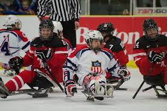

El hockey sobre trineo (también conocido como Para hockey sobre hielo , o hockey sobre trineo en inglés americano ) es una adaptación del hockey sobre hielo diseñada para jugadores que tienen una discapacidad física . Inventado a principios de la década de 1960 en un centro de rehabilitación en Estocolmo , Suecia , y jugado bajo reglas similares al hockey sobre hielo estándar, los jugadores se sientan en trineos y usan palos de hockey especiales con "dientes" de metal en las puntas de sus mangos para navegar por el hielo. Los lugares de juego utilizan una pista de hockey sobre hielo . A través de su división World Para Ice Hockey, el Comité Paralímpico Internacional (IPC) actúa como el organismo sancionador internacional para el deporte. El para hockey sobre hielo se ha jugado en los Juegos Paralímpicos de Invierno desde 1994 y ha sido uno de los eventos más populares. Dos hombres de Suecia diseñaron el trineo en la década de 1960 [ cita requerida ] porque querían seguir jugando al hockey a pesar de sus discapacidades físicas . Su diseño incluía dos patines en un marco de metal que permitía que el disco pasara por debajo.

Completaron el conjunto al incluir dos postes redondos con manijas de bicicleta por palos. Aunque existen muchas restricciones en cuanto a las medidas y el peso de los trineos que se utilizan en los Juegos Paralímpicos , el diseño básico de los trineos modernos se mantiene fiel a los trineos simples para niños originales de la década de 1960. Estos trineos se fabricaron luego para ser utilizados en el hockey. A pesar de la falta inicial de interés y conciencia en los años siguientes, la competencia entre equipos de hockey en trineo comenzó en 1971 e incluía cinco equipos en Europa . En 1981, Gran Bretaña estableció su primer equipo de hockey sobre trineo, y Canadá lo siguió poco después en 1982. No fue hasta 1990 que Estados Unidos desarrolló su primer equipo de hockey sobre hielo. El hockey sobre trineos continuó expandiéndose cuando Estonia y Japón desarrollaron sus equipos en 1993. El hockey sobre trineos se introdujo en los Juegos Paralímpicos de Invierno en 1994 , con Suecia reclamando la primera medalla de oro. Desde 2010 , el hockey sobre trineo ha sido un evento mixto. El 30 de noviembre de 2016, como parte de un esfuerzo por mejorar y unificar la comercialización de sus deportes auto-sancionados fuera de los Juegos Paralímpicos, y citando que la palabra "trineo" tenía diferentes significados entre idiomas, el Comité Paralímpico Internacional anunció que en lo sucesivo se referiría al hockey sobre trineo como Para hockey sobre hielo (con su subdivisión sancionadora, en consecuencia, rebautizada como World Para Ice Hockey)

Los palos tienen una hoja curvada en un extremo de manera similar al hockey sobre hielo normal y, en general, de seis a ocho dientes de metal en el extremo opuesto de la hoja para maniobrar y propulsar. El movimiento se logra utilizando los dientes de metal como medio para agarrar el hielo y empujarse hacia adelante. Los dientes de metal no pueden ser demasiado puntiagudos ni sobresalir más de 1 cm del palo, para evitar daños en el hielo o lesiones a otros jugadores. Otro equipo incluye un casco con mascarilla, hombreras y coderas, espinilleras y guantes de hockey. Los pantalones y el calzado quedan a discreción tanto de la comodidad como de la necesidad del jugador. Los porteros usan la máscara estándar, el protector de pecho y brazo, la almohadilla de bloqueo y el guante de recepción, además de una almohadilla para las piernas si así lo desean y un palo con dientes tanto en la paleta como en la perilla del palo. Adicionalmente,
Esencialmente, todas las reglas estándar del hockey sobre hielo se aplican al hockey sobre trineo. Las diferencias son las requeridas por el trineo de hielo y el atleta . El primer conjunto de reglas internacionales se creó en 1990 y se redactó a partir de las reglas canadienses. La única penalización exclusiva del hockey sobre trineo es el golpe de salida, el acto de cargar a un oponente usando cualquier parte del radio frontal del trineo. A los jugadores con movilidad limitada en los brazos se les permite el uso de un asistente sin discapacidad. Los empujadores deben usar la camiseta del equipo y el equipo de seguridad, y no pueden exceder la velocidad del jugador promedio en el hielo ni pueden ingresar a la "casa" (el área que se extiende desde el área de la portería hasta los puntos de saque neutral de la zona de anotación, extendida hasta la parte superior de los círculos de saque neutral) mientras está en la zona defensiva. Los juegos se dividen en tres períodos de 15 minutos. Si hay un empate al final del tiempo reglamentario, se sigue con la prórroga , y si sigue empatado después del período de la prórroga, se lleva a cabo una tanda de penaltis para determinar el equipo ganador.

El hockey sobre trineo fue inventado en un centro de rehabilitación en Estocolmo, Suecia, a principios de la década de 1960, por un grupo de personas que querían seguir jugando al hockey a pesar de sus discapacidades físicas. Modificaron un trineo de estructura metálica (trineo) con dos patines de hockey de tamaño regular que permitían que el disco pasara por debajo. Usando postes redondos con mangos de bicicleta como palos, los hombres jugaron sin porteros. El deporte se puso de moda: en 1969, Estocolmo tenía una liga de cinco equipos que incluía atletas con discapacidad y atletas sin discapacidad. A nivel recreativo, cualquier persona puede jugar hockey sobre trineo, discapacitados y sin discapacidad. Sin embargo, a nivel internacional, solo los atletas con una discapacidad en la parte inferior de su cuerpo pueden ser clasificados por el Comité Paralímpico Internacional (IPC) para participar. Trabajando con la Asociación de Deportes en Silla de Ruedas de Saskatchewan, estamos emocionados de ofrecer la oportunidad de que los grupos prueben el deporte del hockey sobre trineo al registrarse para uno de nuestros eventos 'Try Sledge Day'. Envíe una solicitud para organizar un "Día de prueba del trineo" a continuación.